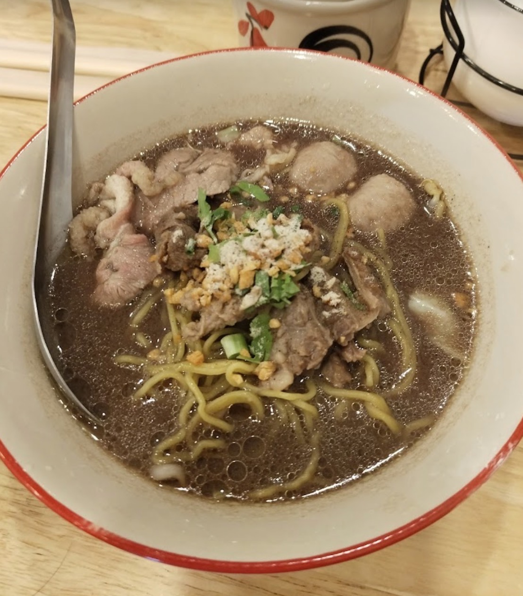
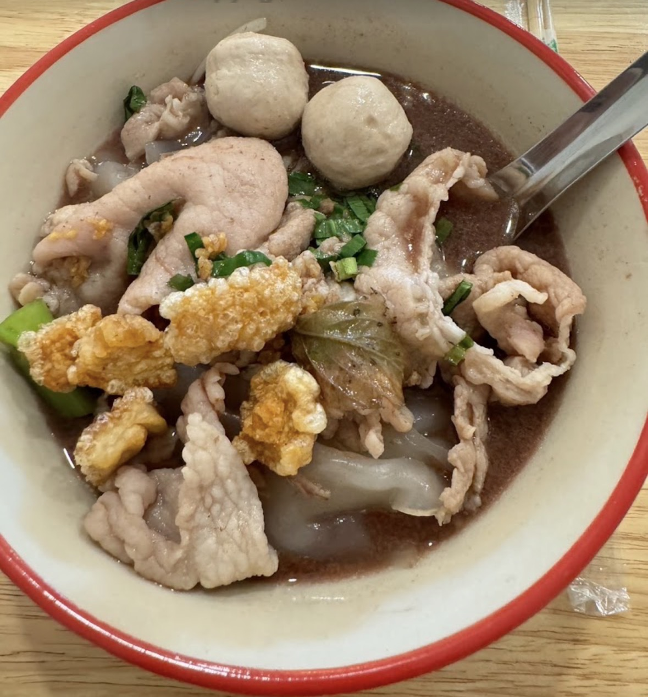

Beef Noodles
Discover our beef noodle dish.
WELCOME TO MAE MEOW
Discover the delicious flavors of Thai noodles and the stories behind every bowl. Made with care and shared with love in Muak Lek.
Explore Our Menu →OUR LITTLE STORY
Every bowl has a story. Discover the food, cooking knowledge, and people behind Mae Meow Thai Noodle Shop.
Discover Our Story →A TASTE OF MAE MEOW
Explore the food prepared at our shop.

Discover our beef noodle dish.

Explore the flavors of pork noodles.

Learn about the cooking behind this dish.

BEHIND THE FOOD
Food knowledge is built through experience, teaching, and everyday cooking. We want to share the stories and experiences of the people behind Mae Meow.
Discover Our Food Knowledge →COME VISIT US
338/25 Muak Lek, Saraburi 18180, Thailand
Find Our Shop →